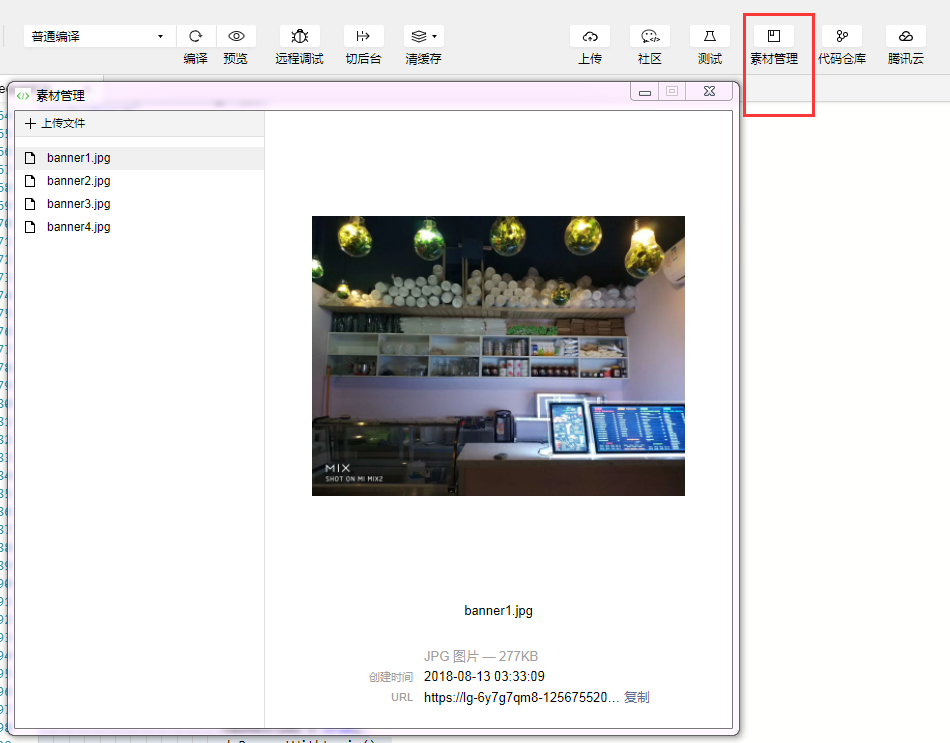
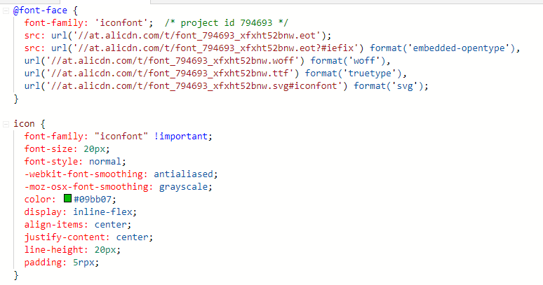

微信小程序实践总结
依托微信平台，借助于微信的巨大用户量，小程序有着不错的发展趋势，在对微信小程序进行一番探索实践后，做个经验总结。这里就不详细介绍小程序的一些基础知识了，可以仔细研读官方开发文档，再结合demo代码，可以有更好的理解，这里就结合开发中遇到的一些问题进行探讨。
demo代码位于： 微信小程序客户端和服务端Demo
该demo的开发使用了官方提供的带node.js 服务端的开发模板，在使用该模板开发时，还是发现模板中前端和后端sdk包 有不少问题，建议开发时还是参考 官方的sdk 源码做一些自主的修改。
小程序中的图片和图标
在小程序开发过程中，在wxss中想使用图片作背景图时，小程序是不支持从本地图片引入的，需要使用远程网络图片，而在wxml 中image 标签则可使用本地图片或网络图片。在小程序打包大小允许的情况下，使用本地图片可减少网络请求，在小程序页面中尽快显示。当需要从网络加载图片时，可以使用开发者自己的静态资源服务器（如果你的网络服务好的话），或者一些图床服务，小程序开发工具中也提供了一个方便的素材管理功能，申请开通后，就可以直接上传至腾讯云的对象存储中，如图所示。

在开发时我们会需要使用到一些图标，小程序官方也提供了一些基础的图标，但显然是不够用的，在web html的开发时我们常将图标合并以字体文件的形式使用，小程序里也是支持的。但同样，字体文件不支持从本地引入，需要从网络加载，这里可以使用阿里的 iconfont 整理好项目的图标，生成代码，从阿里的cdn引入加载，十分方便。可以在wxss中引入字体资源，也可以通过小程序的动态加载字体接口wx.loadFontFace引入。

小程序中的本地存储 storage
如官方文档所说，每个微信小程序都可以有自己的本地缓存，同一个微信用户，同一个小程序 storage 上限为 10MB。localStorage 以用户维度隔离，同一台设备上，A 用户无法读取到 B 用户的数据。在浏览器web开发中，我们常用cookie的形式来鉴别http的状态，在小程序中我们则可以使用这个本地存储来 存储一些用户登录信息，购物车数据等，可见demo代码中使用情况。那么使用时也需要十分注意这个本地存储的销毁时间，一般在用户使用小程序时，这个本地存储是一直存在的，有以下几种情形会清空这个存储：
- 小程序代码主动去清空相关存储
- 如果用户储存空间不足，微信会清空最近最久未使用的小程序的本地缓存。
- 用户主动将小程序从微信中删除
小程序的登录问题
在开发小程序时，看开发文档后，登录是一个比较令人困惑的问题，关于登录和获取微信用户信息在社区中也是讨论最多的两个问题，官方也做了一些相应的解释。这里我就再总结一下。
在之前小程序启动时，有不少程序员在启动时就调用wx.getUserInfo，这就导致用户在不知道小程序什么样的情况下，就遇到授权弹窗，官方看到不少用户会直接点不允许授权，觉得这种体验方式不好，造成用户流失。因此现在改为不推荐直接调用getUserInfo，而是建议通过按钮点击去让用户授权，获取用户信息，可以让用户先看看小程序长什么样，必要时再去授权。这也造成不少开发者需要去修改代码，有不少吐槽。
官方提供相关开放接口wx.login，wx.getUserInfo和wx.checkSession等，究竟何时需要使用，怎么使用呢。
- 某些轻量小程序或小游戏不需要登录行为，但是也想获取用户信息，可以不使用
wx.login接口，直接通过点按钮授权的方式去获取用户信息，也可以使用wx.getUserInfo设置withCredentials参数获取用户信息。 - 很多场景下，例如demo中的商店小程序，需要有后端服务，需要接入微信用户，数据库中需要记录订单支付信息，收货地址信息等，这时就需要用到微信提供的
wx.login接口。根据官方文档，一个登录的最佳实践是这样的：

可以按该时序图开发登录过程，在这个过程中需要注意的是：
- 注意定期使用
wx.getUserInfo获取并更新用户的信息，防止微信用户在微信中修改了自己的信息； - 目前微信的
session_key有效期是三天，如果开发者设置自己的登录态有效期的话，有效期要小于这个值。不设置的话可以用wx.checkSession去检查是否过期，注意在小程序服务端去更新这个session_key； - 这个
session_key同时也是解码密钥，不要直接下发到小程序客户端，可以像demo代码中那样在服务端对其进行SHA1加密后再下发到client。
在demo代码中用到了官方提供的基于腾讯云的小程序全栈方案，包括了server端sdk，和client端sdk，发现源码有如下一些问题：
- 先看client端sdk中封装的request代码，每次当带登录态进行请求时，先调用login接口后再请求，每次login请求都会去走后端的授权中间件部分，对用户信息和
session_key进行更新，其实按理是没有必要每次请求都先调login的，也造成请求上的浪费。最好是在必要时去调用login接口更新信息，如登录态失效或session_key过期。
1 | function request(options) { |
- 再看下后端sdk中鉴权中间件代码，检查登录态失效，会返回code为-1，这样client再请求一次，先调用login接口，不用用户去主动登录，这样的话后端sdk的这个鉴权部分是不是便形同虚设了呢。
1 | function validation (req) { |
当然，上面sdk源码中的这些问题仅仅是我自己的思考，整体使用起来还是能使用的，如果是使用腾讯云的相关服务，配合这套全栈方案还是不错的。如果开发者用自己的服务器，可选择熟悉的后端语言，参考该流程开发。